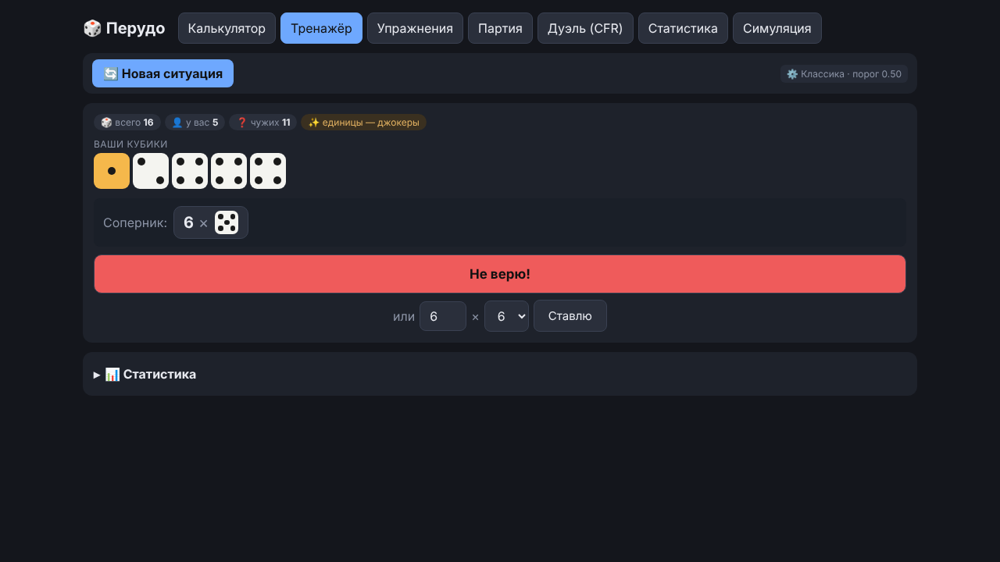
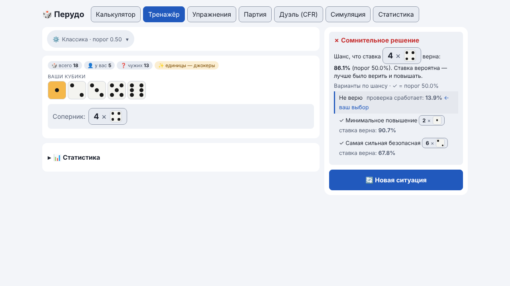
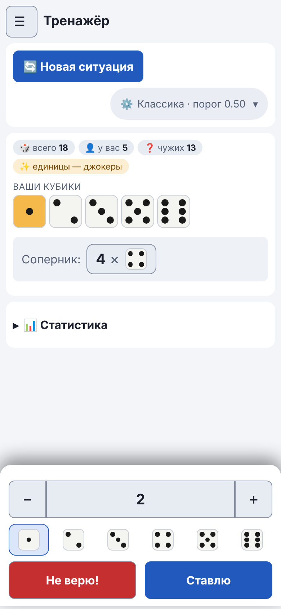
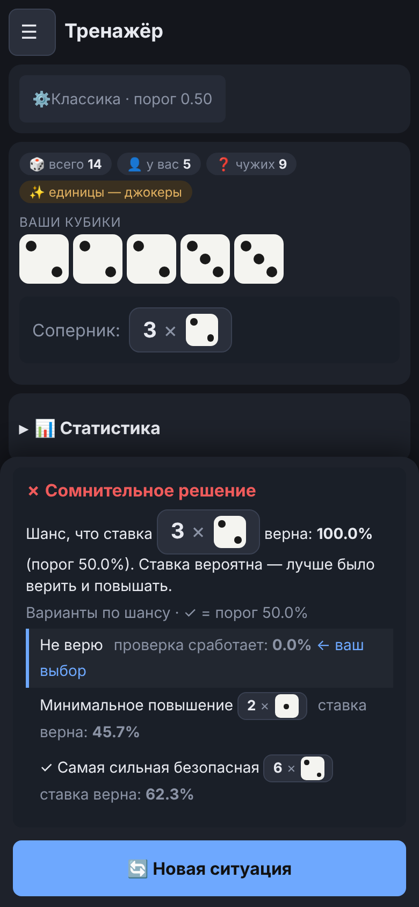
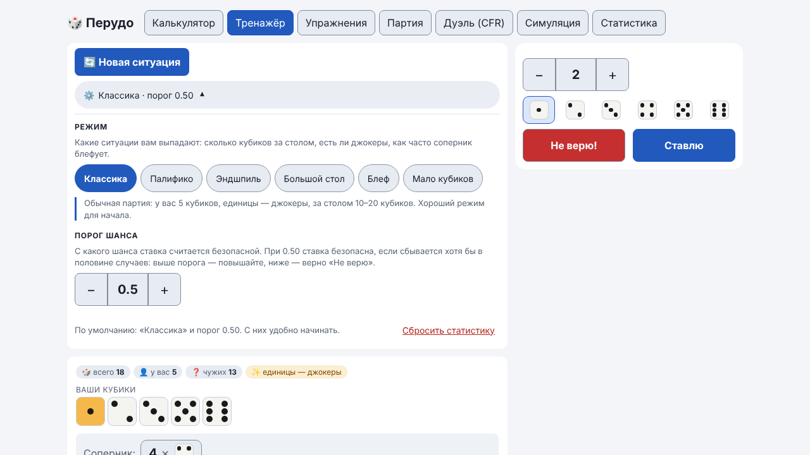

Руководство / Тренажёр
Тренажёр
Короткие учебные ситуации: приложение показывает ваши кубики и ставку соперника, вы выбираете «Не верю!» или свою ставку и сразу видите, правильно ли решили.
Как пройти ситуацию
- Нажмите «Новая ситуация».
- Посмотрите свои кубики и ставку соперника.
- Нажмите «Не верю!» или выберите свою ставку и нажмите «Ставлю». Поля ставки сразу заполнены минимальной допустимой ставкой.
- Прочитайте оценку: шанс, что ставка верна, и порог.
Под оценкой показаны варианты хода по шансу ставки: «Не верю» (с каким шансом проверка сработает), минимальное повышение и самая сильная безопасная ставка. Ваш выбор отмечен. Это сравнение по шансам, а не оценка выигрыша: оно не говорит, какой ход «лучший», а показывает цену каждого.


Ставка должна быть допустимой по правилам. Если ставка не проходит (например, «6 × 4» после «4 × 1»: на другую цифру после единиц нужно не меньше 4 × 2 + 1 = 9), приложение объясняет, какая ставка минимальна. Такую ставку оно не оценивает, и в статистику она не попадает. В режиме «Без джокеров / Палифико» можно повышать только количество на ту же цифру. Если повысить уже нельзя, остаётся «Не верю!».
На телефоне
Ответ выбирается внизу экрана: количество кнопками «−» и «+», цифра, «Не верю!» или «Ставлю». После ответа на этом месте появляется разбор.


Настройки
Они открываются по пилюле «⚙️ Классика · порог 0.50» вверху вкладки. У каждого пункта есть пояснение.
- Режим выбирается плитками, под ними одной строкой описано, чем режим отличается. Для начала подойдёт «Классика».
- Порог шанса меняется кнопками «−» и «+» с шагом 0,05 (от 0,05 до 0,95). Это шанс, с которого ставка считается безопасной: при 0,50 ставка безопасна, если сбывается хотя бы в половине случаев.
- Сбросить статистику — ссылка внизу панели. Перед сбросом приложение просит подтверждение.

Режимы
| Режим | Особенность |
|---|---|
| Классика | 10–20 кубиков на столе, 5 у вас, единицы — джокеры |
| Без джокеров / Палифико | Все цифры выпадают с вероятностью 1/6 |
| Эндшпиль | На столе всего 3–6 кубиков: ваши кубики решают многое |
| Большой стол | 25–40 кубиков, работает «среднее ожидание» |
| Блефующий соперник | Соперник часто завышает ставку |
| Мало кубиков у вас | У вас 1–2 кубика, рука почти ничего не говорит |
Как работает повтор
Ошибочные ситуации попадают в очередь и возвращаются (с пометкой «повтор»), пока вы не решите их верно два раза подряд. Одна и та же ситуация возвращается не сразу: между двумя её показами проходят минимум три другие ситуации. Так повтор проверяет умение, а не память о только что увиденном ответе. Результаты по режимам видны на вкладке «Статистика».